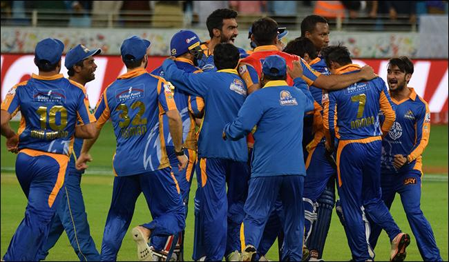

LAHORE: Former army chief General (retd) Raheel Sharif on Friday arrived in Pakistan. According to Geo News, the general travelled through a special aircraft which would fly back to Saudi Arabia tonight .Details
Musharraf should face courts if he is brave: Zardari
KAMALIA: The Pakistan People’s Party (PPP) Co-chairman Asif Ali Zardari has said General Pervez Musharraf should return to Pakistan and face the courts if he is really a brave person, Geo News reported on Friday.Details
PSL 2017: Karachi Kings qualify for playoffs, Qalandars eliminated

DUBAI: Karachi Kings defeated Islamabad United by six wickets in rain-reduced Twenty20 match and qualified for playoffs of the Pakistan Super League 2017.Details
E-Crime Reporting System
The world suffers a lot. Not because of the violence of bad people but because of the silence of the good people.